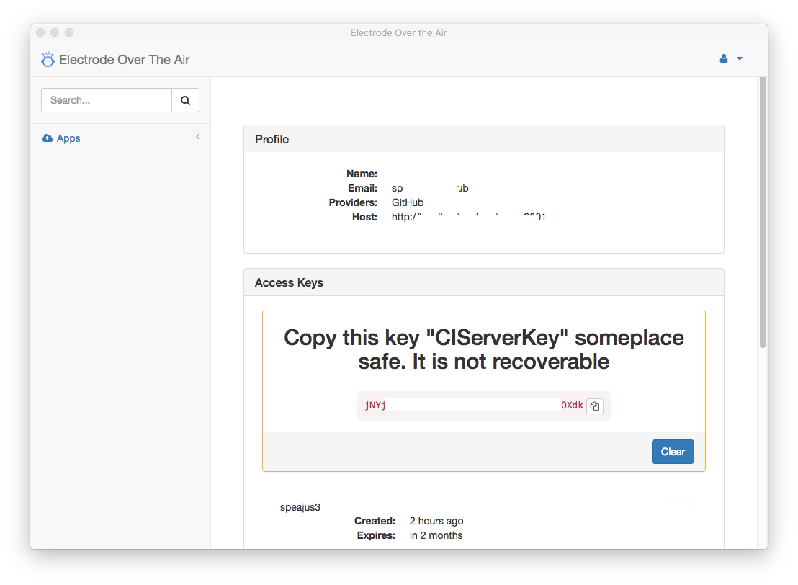

React Native and Over the Air
Electrode Over the Air Server #
Electrode Over the Air (OTA) is a Microsoft(tm) Code Push compatible server for allowing mobile applications to update with or without user intravention.
Prerequisites #
- Node v6 or greater here.
- Apache Cassandra here and getting started here
- Github Account (if using github as auth provider) here
Running Cassandra #
Books have been written about running and configuring cassandra, this is just the most minimal way you can run
it. Please read such books before running this server on a public network.
sh
$ curl http://apache.mirrors.hoobly.com/cassandra/3.9/apache-cassandra-3.9-bin.tar.gz | tar -xvzf -
$ cd apache-cassandra-3.9/
$ ./bin/cassandra
Installation #
This covers a minimal way to install and run electrode-ota-server. For most scenarios this is not complete. Be sure to setup SSL, load balancing, and all the other requirements for your environment.
$ mkdir your_ota
$ cd your_ota
$ npm init
$ npm install electrode-ota-server --save
$ mkdir config
In package.json add By default the server will start with production config. This can be overridden with NODE_ENV.
"scripts":{
"start":"NODE_ENV=production node node_modules/.bin/electrode-ota-server",
"development":"NODE_ENV=development node node_modules/.bin/electrode-ota-server"
}
Setting up OAuth #
To use github as an OAuth provider you need to login to github and add an OTA Application.
Step 1 - Login to github and select Settings.
Step 2 - Go to "Developer Settings" and select "OAuth applications"

Step 3 - Setup your application. Keep in mind protocols and urls are important. Also you can set up a key for development also (localhost.yourdomain.com).
Make sure that resolves, for your machine, try adding it to your hosts file. If you do not have a public server running
you can add a use http://localhost:9001/ for homepage and authorization callback url., for development only.

Step 4 - Wild celebration, or double check that everthing is correct. This is your you get your clientId and clientSecret. Keep your clientSecret secret (avoid checking it into public github for example).

Configure OTA Server #
Inside the config create a config/production.json. You must configure at one environment. You can create
different settings for production,test and development, by creating seperate json files for each environment.
In production please use TLS/HTTPS for the server.Setting TLS is outside the scope of this document.
The configurations are loaded via electrode-confippet, more details here.
The variables that should be configured is are in <%= variable %>. The comments must be removed if using JSON.
{
"plugins": {
"electrode-ota-server-dao-cassandra": {
"options": {
//You can enter an array of cassandra "contactPoints" but you need at least one.
// If you are running cassandra locally you can use "localhost".
"contactPoints": [
"<%=cassandra.hosts%>"
],
//Optional - If your cassandra server does not require a password
"username": "<%=cassandra.username%>",
//Optional - If your cassandra server does not require a password
"password": "<%=cassandra.password%>"
//Optional the keyspace you want to run the server with, by default the keyspace is "wm_ota".
"keyspace":"<%=cassandra.keyspace%>"
}
},
//This allows for other fileservice mechanisms to be plugged in. Currently the files are stored
// in the cassandra db, but the could be stored in anything really, including the filesystem.
"electrode-ota-server-fileservice":{
"options": {
//this needs to be the url of your acquistion server. It can be the same as your current
// management server.
"downloadUrl": "http://<%=your_ota_server%>/storagev2/"
}
},
"electrode-ota-server-auth": {
"options": {
"strategy": {
//Authentication Strategy. The OTA uses [bell](http://https://github.com/hapijs/bell) for
//OAuth. You can see the vendors and options there. We test with github oAuth.
"github-oauth": {
"options": {
//A Cookie password otherwise a raondom one (Optional)
"password":"<%= another cookie password%>",
//This is true by default if not running https change to false. You should run over https though
"isSecure":true,
//The callback hostname of your server. If you are running behind a proxy,
//it may be different than what the server thinks it is. (Optional)
"location":"<%= the address of your server %>",
//Get the Oauth info from github.
"clientId": "<%=github oauth clientId%>",
"clientSecret": "<%=github oauth clientSecret%>"
}
},
"session": {
"options": {
//A Cookie password otherwise a raondom one (Optional)
"password":"<%= another cookie password%>",
//This is true by default if not running https change to false. You should run over https though
"isSecure":true
}
}
}
}
}
}
}
OTA uses bell for oAuth you can look there for more configuration options.
Running OTA #
You can run OTA many ways, the easiest is to just to run.
$ npm start
Logging into your OTA Server. #
To use the server you just set up you will need to make the following modifications to your client (iOS/Android(tm)) app, along with setting up Apps with the OTA Server. Your server can host multiple applications from multiple developers, to manage these you can use Microsoft's code-push cli.
From the Command Line #
If want to manage your OTA Server via command line. You can follow these directions. Or you can use the Electrode OTA Desktop to do the same thing.
Installing the code-push-cli #
$ npm install code-push-cli -g
Register #
You only need/can register once per github account. So the first time each user would need to:
sh
$ code-push register https://<%=your_ota_server%>
Login #
After you have registered if you've logged out you may need to log back in, or your acccess-key is lost or expired you
can log back in.
sh
$ code-push login https://<%=your_ota_server%>
Server Token #
Your server token page should look like this.
Creating a CodePushDeploymentKey #
$ code-push app add <%=YourAppName%>
Should result in something like
sh
Successfully added the "YourAppName" app, along with the following default deployments:
┌────────────┬───────────────────────────────────────┐
│ Name │ Deployment Key │
├────────────┼───────────────────────────────────────┤
│ Production │ 4ANCANCASDASDKASASDASDASDASDASDASDAS- │
├────────────┼───────────────────────────────────────┤
│ Staging │ ASDASDASDASDASDASDASDASDASDASDASDASD- │
└────────────┴───────────────────────────────────────┘
These are your deployment keys. You will need them in the next step.
Changes to Your Application. #
If your app is already using code-push you just need to do the following. If you have not setup your app for code-push, please follow Microsoft™'s guide to setting up the client SDK for React™ here or Cordova™ here.
If you you need an Example application you can find one here.
For IOS #
Then add the following to ios/<%=your_app_name%>/Info.plist. You can open this in sh open ios/<%=your_app_name%>.xcodeprog
to edit.

Or using your favorite text editor.
xml
<key>CodePushDeploymentKey</key>
<string><%=your_deployment_key%></string>
<key>CodePushServerURL</key>
<string>http://<%=your_ota_server%></string>
If your OTA server is not running over https you will need to add an exception to it in the ios/<%=your_app_name%>/Info.plist,
or you use Xcode to update the file.
xml
<dict>
<key>NSAllowsArbitraryLoads</key>
<true/>
<key>NSExceptionDomains</key>
<dict>
<key><%=your_ota_server%></key>
<dict>
<key>NSTemporaryExceptionAllowsInsecureHTTPLoads</key>
<true/>
</dict>
</dict>
</dict>
For Android #
Modify android/app/src/main/java/com/<%=your_app_name%>/MainApplication.java
/**
* A list of packages used by the app. If the app uses additional views
* or modules besides the default ones, add more packages here.
**/
@Override
protected List<ReactPackage> getPackages() {
return Arrays.<ReactPackage>asList(
new MainReactPackage(),
new CodePush("<%=your_ota_deployment_key%>", this, BuildConfig.DEBUG, "<%=your_ota_server%>")
);
}
Publishing (React) #
To update the app over the air run. See the Microsoft™ code-push docs for more information. On how to
add CodePush to your application.
sh
$ cd your_client_app_dir
$ code-push release-react <%=YourAppName%> ios --deploymentName <%=Staging|Production|Etc.%>
Electrode Over the Air Desktop #
You can use either the microsoft code-push-cli or the Electrode OTA Desktop to manage your deployments. You can get the install here.
Installation #
Copy of the ElectrodeOTA icon to the Applications folder
Logging in #
Use the token from the pretty screen with the trees on it here. The host would be your OTA Server.
Creating a New App to Manage #
You will need an app to get the deployment keys.
Creating a New Deployment #
You can use Staging and Development or create your own, for your workflow.
Adding a New Release #
To Upload a new release select the deployment and click release.
Adding Collaborators #
If you need to share responsibility you can add collaborator. However they will need to register see first to be able to add them to your App.
New Key #
If you loose key, or want one for you CI server you can manage them here. 